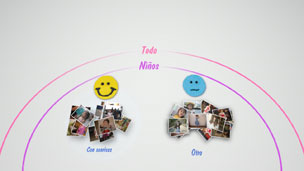
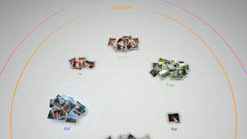

Organización de las fotografías
Agrupación de fotografías
Puede seleccionar los eventos y, a continuación, agrupar las fotografías correspondientes a tales eventos seleccionados mediante una de las opciones que se describen a continuación. Seleccione los eventos que contienen las fotografías que desea agrupar, pulse el botón  y, a continuación, seleccione
y, a continuación, seleccione  (Agrupar). Si desea limitar el número de fotografías agrupadas, seleccione uno o varios grupos que contengan las fotografías que desea agrupar y, a continuación, utilice otra opción de (Agrupar) para realizar la agrupación de fotografías.
(Agrupar). Si desea limitar el número de fotografías agrupadas, seleccione uno o varios grupos que contengan las fotografías que desea agrupar y, a continuación, utilice otra opción de (Agrupar) para realizar la agrupación de fotografías.
| Fecha/Hora | Se agrupan por la fecha y la hora de realización de las fotografías. |
|---|---|
| Número de personas | Se agrupan por el número de personas que aparecen en las fotografías. |
| Edad del grupo | Se agrupan en función de las edades correspondientes de las personas que aparecen en las fotografías. |
| Expresión | Se agrupan por las expresiones de las caras de las personas que aparecen en las fotografías. |
| Color | Se agrupan por los colores que aparecen en las fotografías. |
| Tipo de cámara | Se agrupan por el modelo de la cámara utilizada para tomar las fotografías. |
| Juego | Se agrupan por el título del juego. |
| Álbum | Se agrupan por los álbumes que se hayan creado en  (Foto) en la pantalla XMB™. (Foto) en la pantalla XMB™. |
Notas
- Mediante [Seleccionar todo], todas las fotos de [Área de biblioteca] se agruparán de acuerdo con la opción seleccionada.
- La agrupación se basa en el análisis de las fotografías y, en algunos casos, es posible que los resultados no sean los esperados.
- Puede crear una lista de reproducción de las fotografías agrupadas.
Ejemplos de fotografías agrupadas: fotografías de niños sonrientes
1. |
Seleccione |
|---|---|
2. |
Seleccione el grupo con la etiqueta [Niños] y, a continuación, pulse el botón |
3. |
Seleccione  |
Ejemplos de fotografías agrupadas: las fotografías en las que se muestren cielos azules
1. |
Seleccione |
|---|---|
2. |
Seleccione el grupo con la etiqueta [Paisaje/Otro] y, a continuación, pulse el botón |
3. |
Seleccione  |
Eliminación de fotografías
Para eliminar una fotografía o álbum, seleccione la fotografía o álbum, pulse el botón y, a continuación, seleccione  (Eliminar).
(Eliminar).
Nota
Si elimina fotografías de [Área de biblioteca], también se eliminarán del almacenamiento del sistema del sistema PS3™.